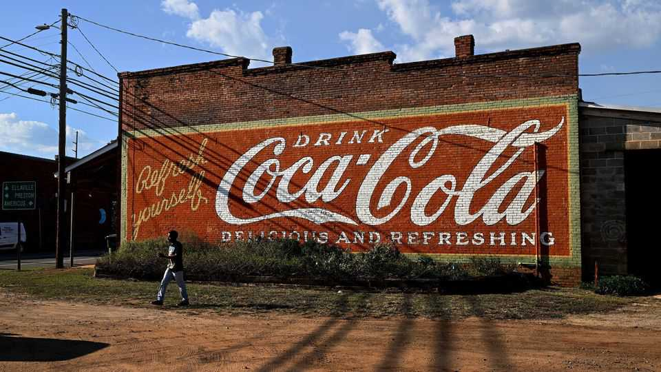

The IRS is going after America Inc’s overseas profits
Companies from Coca-Cola to Meta are in its sights

Sep 3rd 2026
For decades American businesses have fattened their bottom lines by shifting profits to low-tax jurisdictions abroad. In 2025 alone they saved at least $11bn using these manoeuvres, reckons the FACT Coalition, an advocacy group. Now the government wants some of that back.
Many American bosses breathed a sigh of relief when, on his first day back in the Oval Office last year, Donald Trump announced that the country was abandoning a global agreement orchestrated by his predecessor that would have subjected tax-shy multinationals to top-up duties. But those who hoped this would mark the end of government efforts to reclaim a greater share of their profits booked abroad were mistaken. In May this year UnitedHealth, an American insurance giant, disclosed that the Internal Revenue Service (IRS) was pursuing it over profits it had attributed to a foreign subsidiary, with the agency insisting it had underpaid its taxes back home. The case is part of an effort by the IRS that began during the Obama administration to crack down on so-called transfer pricing—an initiative the Trump administration has shown no sign of resiling from. Many billions of dollars are at stake.
Among the companies the IRS is tussling with over transfer pricing are Amgen, a biotech firm, and Meta, owner of Facebook and Instagram. But it is the case against Coca-Cola, the world’s most valuable drinks company, that has been called the “Super Bowl of transfer-pricing controversy”. (Tax lawyers are easily entertained.)
That case, which has been in train for over a decade, may at last reach a conclusion in the coming months. Back in 2015 the IRS told Coca-Cola it owed an additional $3.3bn in tax for the period from 2007 to 2009, arguing that the company had improperly parked profits arising from intellectual property—including its famous logo—overseas. The battle has taken years to wind its way through the courts, during which time Coca-Cola has continued to follow the same tax practices. As a result, the money at stake has ballooned to as much as $20bn. Coca-Cola argues that its foreign subsidiaries have made valuable marketing investments worthy of the astronomical returns on capital it has attributed to them. It also contends that it is merely sticking with an agreement the company reached with the IRS back in 1996 on how the company could split its profits (though that deal related to past earnings).
Coca-Cola and others pursued by the IRS over transfer pricing have been remarkably relaxed about the situation, at least publicly. As of July the drinks giant had squirrelled away just $530m to pay a tax bill that could amount to as much as $14bn in the event of a loss (the company has already shelled out $6bn, which it would be refunded if it wins). In July Amgen settled an investor lawsuit that accused it of underselling the risks of its fight with the IRS. Its disclosures were like “a child telling his parents that he had ‘dessert’ when in fact he had eaten the ‘whole cake’”, noted a federal judge during the case.
Winning its largest transfer-pricing cases would allow the IRS to claw back roughly $100bn in additional taxes from a small group of firms, including penalties and interest, notes Steven Wrappe of Grant Thornton, an accountancy. That amounts to about a fifth of the total corporate-income tax that the American government collected in 2025.
In the short term, expanding the crusade would be difficult; the IRS’s budget has been slashed under Mr Trump, meaning its staff are already stretched. In the long term, however, transfer-pricing disputes will probably increase. One reason is the growing share of firms’ value that comes from the kind of intangible assets that facilitate cross-border tax dodges, because they do not need to be physically moved. From 1975 to 2025 the share of the total value of firms in America’s S&P 500 index that can be attributed to intangible assets rose from 17% to 92%, according to Ocean Tomo, an advisory firm. Another reason to expect more of these cases is that—as bond-market investors know too well—America’s government debt continues to soar. Its multinationals may soon have to foot a bigger share of the bill. ■